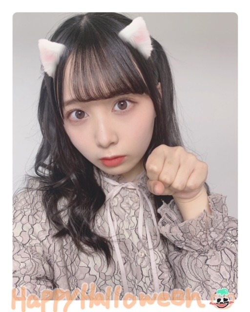
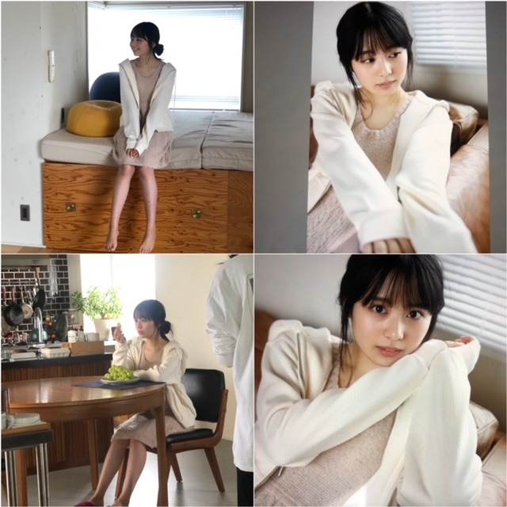
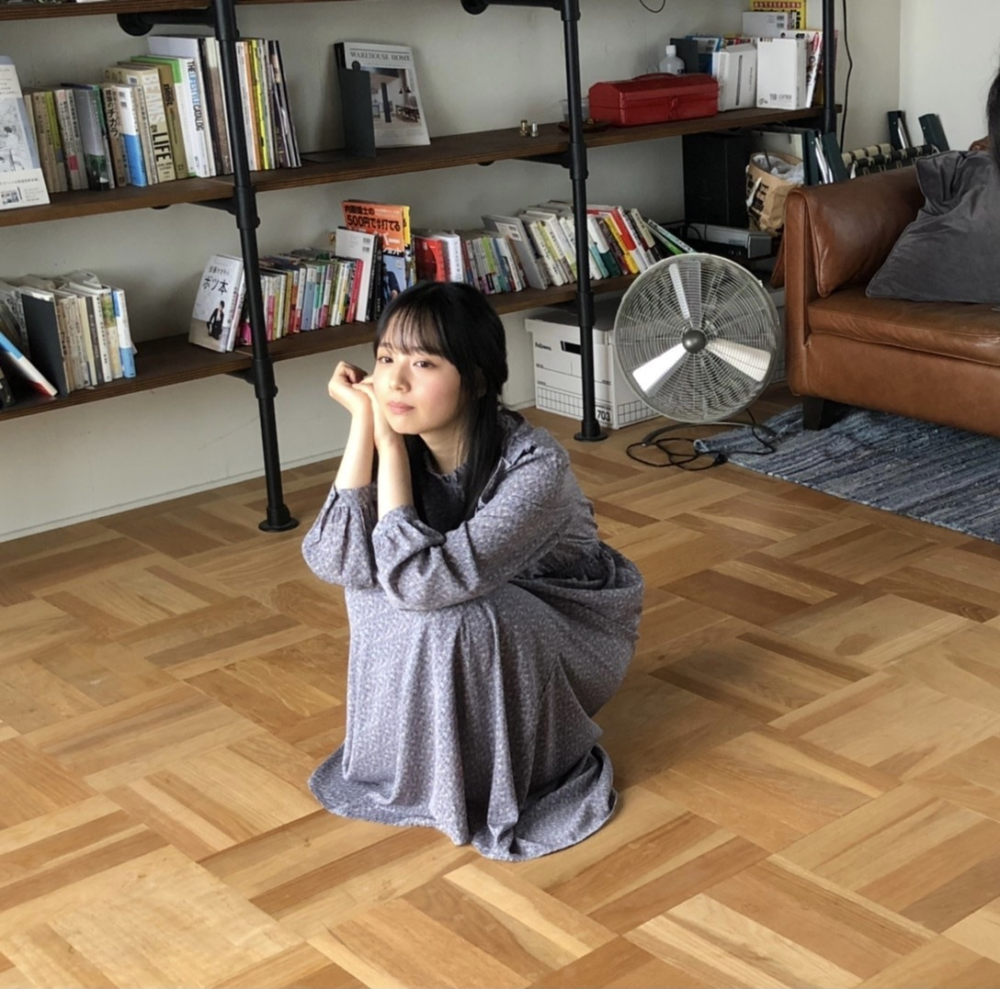

2020/1104Wed約束したけど。佐藤璃果
こんにちは~
乃木坂46 新4期生 岩手県出身
佐藤璃果です。

4日遅れのハロウィンです。
約束してましたよね！
ハーフツインやって欲しい！
との声もあったのでやってみました。
仮装...アプリの力を借りてしまった、、、。
ちゃんとした仮装ではなく申し訳ないですが
猫！
〇月刊エンタメさん、10月30日発売
台風が近づくとある日に撮影して頂きました。雨の中、屋上で傘をくるくると回し、
ルンルン自分も回転した事、
とても楽しかったです。
一度はやってみたかったことです✌︎
そして、瑠璃色から来ている、綺麗な青色の
ソファーでの撮影も、とても嬉しかったです。お洋服も瑠璃色ぽくて。素敵です。
ありがとうございました。
ブドウともお話してみました。
とても温かくて、楽しくて、
笑顔が溢れる撮影になりました( ˶˙ᵕ˙˶ )
梅澤美波さんと、有難いことに私のポスターもついてきます！
発売中です。
よろしくお願い致します。|˙꒳˙）


〇10月31日、ひかりTV・dTVチャンネルさん
｢山崎怜奈とおはつちゃん｣
究極の芋グルメを探しに行ってきました。
初めての食レポ、1人ロケ、、
お見苦しかったかも知れません（ ; ; ）
沢山、食レポの極意など、
ためになる事を教えて頂きました！
ありがとうございました。
そして、芋堀、焼き芋...
久しぶりに土を触ることが出来ましたし、
芋堀の場所がおばぁちゃん家の環境と似ていて、とても懐かしい気持ちになりました！
沢山ありがたい経験をさせて頂いたので、
沢山芋掘り頑張りました！！！！
焼き芋、美味しかったです( ˙༥˙ )
そして、山崎怜奈さんとお話出来たこと。
れなさんはお優しくて、
この収録の前日にリハがあったのですが、
そのリハの際に｢明日の収録よろしくね！｣
と声をかけてくださって。
驚いたんですが本当に嬉しくて有難かったです！
収録前も沢山お話してくれて。
本当に本当に嬉しかったです。
ラジオや番組等でお忙しかったり、おつかれかもしれないのに、
いろいろなお話をして下さるれなさん。
個人的な事も沢山お話出来て、、
本当に頼りになる先輩なんです。
なんて優しいんだ(><)
これからも沢山お話していきたいです♡
よろしくお願いします|˙꒳˙）

皆さん秋の味覚を楽しみましょう( ˙º˙ )
〇11月4日、ananさん
乃木坂46、
44名全員が anan の誌面に参加させて
頂いた中に出させて頂いています！
とてもうれしかったです。
編集部の方といろいろお話しできたり、
メイクさんにも新しい情報を教えて頂けて、とてもいい1日でした。
新4期内でのトークも大盛り上がりで、
今まで知らなかったことを沢山知れて
楽しかったです◎
今後も色々な事に挑戦していきたいです！
素敵な機会をありがとうございました。
長袖1枚でも寒い季節に
なってしまいましたが、
この空気感も何もかも、大事にしていきましょね。
どうか無理はなさらず\(◡̈)/
~~~質問~~~
〇ハロウィン前夜祭です！なにかしたいことはありますか？
トリックオアトリート！！！
〇もうすぐで10月も終わっちゃうね。なにか言い残したことはありませんか？
いつも本当にありがとうございます。
まだ会えていない方が多いけれど、それでも、これからもどうぞよろしくお願いします。
〇至福のひとときは何している時？
温まっている時と、コーヒーとスイーツを食べている時♡
〇璃果ちゃんは雪国出身なのでスキーとかは上手なんですか??
苦手です(´･×･`)
〇お菓子作ったことない初心者でも作りやすいものって何かある？作ってみたい
チーズケーキとか簡単じゃないかな！？
〇好きなジブリ映画はありますか？？
千と千尋の神隠し！！
〇チョコレートチーズケーキ初めて知ったんだけど、どんな感じの味がするの？？璃果ちゃん教えて！！
チーズの酸味と、チョコレート感
両方楽しめて、美味しいし、
食感も片目とレア、両方楽しめて、
一石二鳥です♡
〇家にこたつはありましたか〜？(東北だと出れなくなりそう)
ありましたよ~
よく寝ていました( ˊ꒳ˋ ) ᐝ
〇これからもりかちゃんのこと推し続けていいですか？？
ずっと一緒に居てください！！
〇スケートはやるー？
やったことあるけど、ノロノロ運転です...
〇璃果さんの名前を入力する時、「りか」と打っても変換候補に「璃果」が出てこないのですが、璃果さんのオススメの入力方法はありますか？
瑠璃果実
頭と後ろを消す！！
〇敬語でコメント書いているのですが、タメ語の方が嬉しかったりしますか？
そうですね、、、。
どちらでも嬉しいです◎
〇そう言えばロケ楽しかった？？笑
とっても楽しかったです☺︎
〇マスカットと巨峰はどっちが好きですか？
悩ましい、、、。
マスカット！！
~~~~~~~~~~~~~~~~~~~
明日はるなぴです。
オススメのオムライス屋さんに
いつか連れてってね♡
~~~~~~~~~~~~~~~~~~
皆さんにとって
素敵な1日になりますように。

後はぶりっ子して欲しいとのお声から！
ぶりっ子ポーズ？
またね。
#39 ？ りか
コメント(346)
4期生単独ライブ決定おめでとう〜〜〜
ライブだよ！
しかも4期生だけで！！
楽しみすぎるー
12月6日って事はもう1ヶ月ないんだね
ライブまで覚える事いっぱいで大変だろうけど頑張ってね
応援してるよ〜
それではまたね
今日はお休みですが6時に起きました
町内の神社の掃除がありましたので
今日は日差しがまったく無いから寒いですね
でも11月だとこれくらいかな？
早起きしたから昼寝してしまうかも
今日も一日頑張って
4期生ライブ本当におめでとうございます(TT)
この発表があったとき本当に嬉しすぎてパニックになりかけました笑笑
4期生だけっていうのも嬉しい限りです( .. )
会場に行けないのが少し残念だけど是非頑張ってね(ᐡ｡• · •｡ᐡ)♡
めちゃくちゃ楽しみにしてます( ¨̮ )
ありがとう！
練習大変だと思うけど応援してます✾
今日も素敵な一日になりますように☺︎
りのん
4期生ライブ本当におめでとうございます(TT)
この発表があったとき本当に嬉しすぎてパニックになりかけました笑笑
4期生だけっていうのも嬉しい限りです( .. )
会場に行けないのが少し残念だけど是非頑張ってね(ᐡ｡• · •｡ᐡ)♡
めちゃくちゃ楽しみにしてます( ¨̮ )
ありがとう！
練習大変だと思うけど応援してます✾
今日も素敵な一日になりますように☺︎
りのん
まずは、ハッピーハロウィン！笑
ハーフツインもいいねー！
芋掘りしたんだー！秋はやっぱり芋！
そして、芋掘りだよねー。特に紫芋がすごい
いいよー！紫芋大福めっちゃ美味しいから
今でも記憶に残ってるんだよねー！機会があれば
食べてみてー！
という事で今回はこれまで、
じゃあ、ばい！
こんにちりかぴ
今日は かわいいのあったので バージョンアップ化を..
指サイズドールの三角帽子に 花冠 。。
彩色グラデでで 外せば まあ 指サイズなので 笑
もう ひとまわり 大きい方には （╹◡╹）マークを
これは マスクに下げられる 感じの 平たいまる○
さっきまで 加工してたりして 一件落着したところ
ではでは お天気よく あたたかいので 良き時間を
モバメ 、、
いつから 始まるんだろうね 。。
輪番制ブログと 並行してだと 大変かな？
でも いっぱい 見たいよ (今は 誰も取らずに待機)
毎日 お芋食べてる 話でも 構わないよ 笑
元気なのが わかれば それだけでも 元気がわくよ
芋の食レポだんだん上手くなってて良かった^_^
お芋掘りも出来て良かったね〜‼︎
りかちゃん大好きです‼︎
今乃木坂で1番推してます‼︎
『月刊エンタメ』さんのオフショット、ありがとうございます。名前にちなんだ瑠璃色のソファーに洋服。自分にちなんだ色があるってすばらしい。テンションも上がりますものね。撮影お疲れさまでした。
『おはつちゃん』ではお芋掘りに挑戦。もう秋も終わりに近づいてきて、あったかなお芋のほくほく感がしっくりくる季節。胸焼けしないよう気をつけて美味しいお芋を召し上がれ。
名前を変換するのに瑠璃と果実を入力してあたまとおしりの一文字ずつ消すのもいいですけれど、やっぱり推しでしたら黙って単語登録。これにつきますね。もちろん僕は登録済み。なのでほら、「りか」を変換すると理科……あれ、誰か来たみたい（←ごまかすでない＞自分 笑）。
今回はコメントするのがずいぶん遅くなってしまってごめんなさい。この週末も璃果さんが楽しくすごせますよう願っています。
ではまた次回。
さらばだ、また会おう！（気球に乗って去りぬ〜）
｢乃木坂46 4期生ライブ 2020｣
開催決定おめでとう！
16人揃っての初ライブ楽しみにしてます
先日あったまいやんの卒業コンサートが
もう本当に素敵であったかくて
パフォーマンスもキレッキレの
最高のライブだったので
今回もそれに負けないような
素晴らしいライブになることを
期待してますね
あっ！｢I see...｣は最後の方までとっておいて
欲しいなっ
めちゃめちゃ好きな曲なので
猫耳にハーフツインは可愛すぎます…
今年はこれといってハロウィンらしいことしていなかったのですが、りかちゃんのおかげでハロウィンを感じられました⸜ ( ˆ࿀ˆ ) ⸝
それから4期生単独ライブが決定しましたね！本当におめでとう！
16人でのライブはTIF以来になりますね。またステージで踊るりかちゃんが見られるのが嬉しい限りです✩.*˚
チケットもちろん買います♪（笑）あと１ヶ月、ライブを楽しみに頑張ります！
明日のらじらー！も楽しみにしていますね。
ではでは、おやすみなさい
さつまいもは皮ごと食べたほうが
栄養があっていいのだそうです。
なので璃果ちゃんは大正解です。
らじらー 、、
あるんだね ..
まあ 声だけでも オンタイムで聞けるのは 嬉しいね 。。
放送を 楽しみにしてますね.. ではでは またね〜
明日はらじらー必ず聴くからね
今からすごく楽しみです
21日発売のアップトゥボーイも楽しみだな
この頃たくさんグラビア飾ってくれるから
お宝も増えるし癒されます
今日はかっきーがドラマに
出演するから予約して明日見ます
璃果ちゃんもドラマに出る機会があれば最高だな
今日も一日お疲れ様でした
こんにちは
こんばんは
ブログ更新ありがとうございます☺︎
今はなんだか指がキーボードに合わなくて誤字を連発しそうですが
気をつけながら書いていきたいと思います。
と書きつつブログを開いた瞬間目に飛び込んできた猫さんのかわいさ破壊力が凄すぎて
前言を撤回したい思いでいっぱいです。笑
雑誌はどちらもまだ買えていないので早急に手に入れたいと思います。
りかちゃんのポスターは永久保存せねばなりませんな☺︎
「璃果」の入力方法として「ユーザー辞書」なるものを用いるとよりスムーズになると思いますよ☺︎
と、質問を送られた方に伝えておいてください。笑
ではでは
だんだんと寒くなってきましたがお互い健康でいましょうね☺︎
とりあえずこちらは最後のお写真のおかげで心がぽかぽかです。
また、
まあ 健やかに 眠れているなら 何よりです がね
璃果ちゃん、こんにちは！
コメント遅くなってすいません。。。
今日はらじらーですね！
僕は坂道研修生ツアーで璃果ちゃんのことが好きになったのですが、璃果ちゃんが乃木坂46に配属された瞬間から、今日という日を夢見てました。
ラジオの生放送は初めてかと思いますが、藤森さんが何とかしてくれます！
吉村さんは今日が初回なので、どんな感じになるのか分かりませんが、璃果ちゃんが楽しめたら良いなと思います
らじらー大好きなんです！！
投稿もたくさんしたので読まれたら嬉しいな
璃果ちゃんが放送を楽しめるようインドカレーをじっくりことこと煮込みながら祈ってます!(^^)!
ところで、、、ハーフツイン佐藤の破壊力たるやありませんね！！
ありがとうございます
東京の方に向かって感謝の念を送っています。
月刊エンタメさんのオフショットもありがとうございます。
ブドウとお話してたんですね！可愛い(^^♪
僕も早速マスカットを買ってきてやって見ました(笑)
おはつちゃんの感想は前回書かせて頂いたのですが、たまたま来月埼玉県に行く用事ができそうなので、できたら川越にも行って来ようかと思います。
ananさんもしっかり購入しました！！
5人での対談が加入当時の時より、仲良くなってる感じが自然に現れてて読んでて楽しかったです(*^▽^*)
最後に質問というか、今日は豆知識と報告良いですか？？
〇前回のブログで璃果ちゃんが作っていたチョコレートチーズケーキ作ってみました。チョコレートの甘味やほろ苦さとクリームチーズの酸味がマッチしていて美味しかったです。
〇美味しいサツマイモはヤラピンという白い液体が表面についているそうです。ヤラピンは時間が経つと黒く変色するので、実際に店頭で買う際は黒いベタベタが多い方を買うのが良いようです。
(ごはんジャパンさんの受け売りです笑)
〇三島甘藷という品種のサツマイモが美味しいらしいです！
そういえば4期生ライブ決定しましたね！
めちゃめちゃ嬉しかったです！！
これからライブの準備で忙しくなると思いますが、体調にはお気をつけ下さいね
それではブログ更新お疲れ様でした。
次回も楽しみにしています！！
まこと
髪型といい何から何まで可愛すぎます！
月刊エンタメみました！マスカットの所がめっちゃ可愛かったです！！
お芋と璃果ちゃんよく似合ってます〜笑 僕は干し芋が大好きなのでこの時期食べまくります笑
~質問~
〇質問じゃないけど来週受験なのでエールください！！
〇干し芋は好きですか？？
来週受験なので璃果ちゃんのブログで心落ち着かせて勉強に励みます！！
次の更新も楽しみにしています！応援してます！！
良い週末を！
今日はラブコメが遅くなりました
朝から食料品の買い出しをしてきました
恒例だけどほぼ1週間分ね (о´∀`о)
また焼き芋買ってきました♬
今日も紅天使です
小腹が空いたから16時に食べましたが
甘くて美味しいです
璃果ちゃんは焼き芋どの種類食べてますか
教えて欲しいなぁ
午後からは試験勉強をしています
15日に試験がありますから少しは
やらないといけないかなと・・
過去問やってます
ほんまに勉強は学生時代で勘弁してくれと
思いますが社会人になってもありますよ
まあ精一杯努力しやす
今日は早めにお風呂に入って
らじらー待機しますね
かわいい璃果ちゃんのラジオ放送楽しみだな
頑張ってね 璃果ちゃん
がんばれ
凄く楽しかったです
璃果ちゃんはほんまにめんこいね
声も可愛いしね
璃果ちゃんと早く逢って
「しゃべりか だまりか むりか」
言われたいな
璃果ちゃんの優しいところ
いっぱい出ていて癒されました
璃果ちゃんのおかげで明日からの
1週間頑張れます
これからも大好きだから
おやすみなさい璃果ちゃん
そしてらじらーサンデーお疲れ様でした！
とっっっっっても楽しかった！！！！！
そしておもしろかったꉂ(ˊᗜˋ*)ヶﾗヶﾗ
りかちゃんの魅力が沢山の方に広まったと思うな〜♡
りかちゃんがゲストだと知った先週からずっとメールを送り続けていたのだけれど、やっぱり読まれませんでした〜(><)
これからのラジオに備えてメール職人の皆さんから学ばねばですね！りかちゃんに褒められたかったな〜！(笑)
そして1時間頑張ったりかちゃんをとても褒め称えたいです！
凄い！偉い！尊敬！
本当にお疲れ様でした(´∀`)
-------❁ ❁ ❁-------
ハーフツイン可愛すぎる〜！
齊藤なぎささんとか、鈴木瞳さんとか私が好きな人はハーフツインがよく似合う！（なんだそれ）
すっごく可愛い！遅めのハロウィンありがとう〜♡
-------❁ ❁ ❁-------
月刊エンタメさんとおはつちゃんのオフショットもありがとう！！！
誌面におさまらなかったショットも素敵なものばかりだね！
お芋持ってるりかちゃん幸せそう(｡-∀-｡)♡
-------❁ ❁ ❁-------
4期生ライブ開催決定おめでとう！
絶対観るね！今からとても楽しみだよ！！！
日々幸せをありがとう！
明日もりかちゃんにとって素敵ないちにちになりますように❁⃘*.ﾟ
Q、コスプレは好きですか？
んだりかちゃん、よかったよ笑
今日の放送聴いて、りかちゃんのイメージが変わった！
こんなバラエティ対応できる明るい感じだったんだね
おとなしいイメージがあったから
段々緊張がほぐれてきたのかな？
れなちさんと、おはつちゃんの後にご飯に行ったって聴いたよ
そうやって先輩とも打ち解けてきたのも、変化につながったのかな
また、りかちゃんの色んな一面が見たいので、
これからも応援してるよ！
仕事が忙しくて遅れてしまいました…
でもこれは言い訳ですよね、ごめんなさい。
遅れながらコメントします！（開き直り）
ハッピーハロウィン！！（遅すぎる）
なんて可愛いのでしょう！
ハーフツイン！猫！もう無敵ですね…！
心がカボチャ色に染まりました（？）
✂ーーーーーーーーーーーーーーーーーーーーーーーーーーーーーー✂
月刊エンタメさんのオフショット！！
りかちゃんが載せてくれるオフショットシリーズ、好きなんです…
いつも載せてくれて、ありがとうございます…！
キュンです…！（届けこの思い）
おはつちゃんに、ananに…幸せが溢れてます
いつも幸せをありがとう…！
パック返し、実践してみてます…！肌がモチモチになるの本当に凄いです…！
✂ーーーーーーーーーーーーーーーーーーーーーーーーーーーーーー✂
らじらー初出演、お疲れ様でした！
乃木のので分かりきっていたことでしたが、りかちゃんの声は本当に癒されます…！
生放送でもりかちゃんの優しさが伝わってきて、本当に耳が幸です…
周りの知り合いの方も「りかちゃんにコメント投稿した！」という声をたくさん聞いて、りかちゃんって愛されてるなぁ…なんて感じました
必殺技の声…抑揚があって本当に良かったです…！
質問です！
・最近のりかちゃん、すごく自信が溢れているように見えるのですが、何か自信を持つコツはありますか…？
・褒めるのと褒められるのと、どちらが得意ですか…？
一年中りかちゃんを褒めたいです…（）
それでは！
またね！
らじらー聴きましたよ！
とても楽しかった〜♪面白くてめんこい璃果さんの魅力がたくさん詰まった1時間でした！
それと、やっぱり璃果さんの声が可愛くて凄く癒やされるし好きだなぁ〜って思いました♪
初めてで緊張したと思うけど、とっても良かったですよ！
お疲れ様♪
ハーフツインとても似合っていて、とっても可愛いです！
可愛すぎです！！ありがとうございます！！！本当にありがとうございます！！！！笑
今回も素敵なオフショットありがとう♪
璃果さんの載せてくれるオフショットを見るのがいつも楽しみです！
どの璃果さんも本当に素敵です♪✨
4期生ライブ決まりましたね！おめでとうございます！
璃果さんのステージ上でのキラキラした姿をまた見られるなんて、とてもとても嬉しいです♪
また一つ楽しみが増えました♪
璃果さんが居てくれて、色んな活躍その姿を見られる事で毎日が潤い幸せな気持ちを貰えます。
璃果さん今日もありがとう。
璃果さんがいつも笑顔溢れる日々を過ごせますように！
またね！
今日の名古屋は爽やかな秋晴れです
朝から日差しがあると心がスッキリします
今日は11月9日で換気の日だって (^.^)
窓を開けて空気の入れ替えして風邪予防
してくださいね
今日は璃果ちゃんのブログ更新日だね
今からめちゃめちゃ楽しみです
またブログ更新してからラブコメします
おはよう
ブログありがとー
オープニングショット、エンディングショット
いずれも秀逸です(^^)
りかりんのアザトカワイさは
賞賛ものです(๑˃̵ᴗ˂̵)
グラビアのショットも豊かな表情で
いろいろな表情またみせてくれたら
嬉しいね！
やっぱりにっこりかかなー
一番は！
ノギスキact2ですね〜
3期生も加わり
ますます厚みのあるパフォーマンス楽しみにしています！
くぼてぃんとの共演も期待期待！╰(*´︶`*)╯♡
12月の4期生ライブも超絶たのしみー
りかりんは何歌いたい？！
私的にはまずりかりんのでこぴん、あらろまとか〜
ま、いろいろ膨らむねー(o^^o)
ではでは
今週もはりきってまいりましょーー！！
ヽ(´▽｀)/
らじらー、僕は聴いたよ。めっちゃ楽しかったです。
どのコーナーも、とてもよかったです。璃果ちゃんの声、とても聞き取りやすかったです。
最後の写真の璃果ちゃん、めっちゃかわいいです。
璃果ちゃん、体調に気をつけてね。
またコメントするね。
聴きました
バラエティー適正が高いって褒められてたね
りかちゃんが褒められてて俺も嬉しいよ
りかちゃん大好き！
プラス
ネコちゃん
プラス
ちっちゃな手
必殺技？
りーにゃんパーンチ
りーにゃん株急上昇1
コメントする

PROFILE
新4期生リレー
202104
| SUN | MON | TUE | WED | THU | FRI | SAT |
|---|---|---|---|---|---|---|
| 1 | 2 | 3 | ||||
| 4 | 5 | 6 | 7 | 8 | 9 | 10 |
| 11 | 12 | 13 | 14 | 15 | 16 | 17 |
| 18 | 19 | 20 | 21 | 22 | 23 | 24 |
| 25 | 26 | 27 | 28 | 29 | 30 | |

僕も明日、バイトの帰りにガストのビーフシチューソースのオムライスを食べて帰ろうかな
あれめっちゃ美味いんだよね(笑)